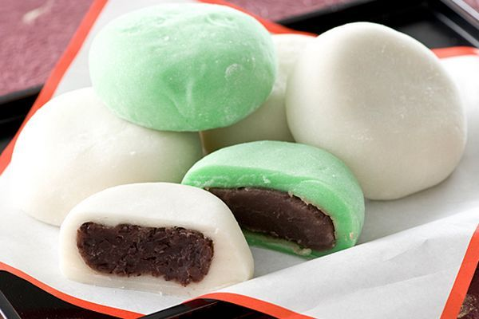

Receita de mochi com recheio de feijão vermelho

INGREDIENTES
RECHEIO
- 200g de feijão azuki seco;
- 150g de açúcar;
- 1/4 de colher (chá) de sal.
MASSA
- Fécula de batata;
- 150g de farinha mochiko (conhecida como farinha de arroz doce ou farinha de arroz glutioso);
- 150g de açúcar.
MODO DE PREPARO
RECHEIO
- Lave o feijão e transfira para uma panela grande. Cubra de água e deixe ferver, depois escorra;
- Cubra o feijão novamente com água e, dessa vez, cozinhe até os grãos ficarem completamente macios (60 a 90 minutos), acescentando mais água, se necessário, para cobrir o feijão, depois escorra;
- Leve os grãos ao processador ou liquidificador e bata até obter um purê. Se sentir que ainda está um pouco duro, acrescente algumas colheradas (sopa) de água;
- Volte a massa a mesma panela do cozimento e coloque o sal e o açúcar. Cozinhe em fogo média para baixo, mezendo de vez em quando, até que a maior parte da água tenha evaporado e a mistura esteja grossa (de 10 a 15 minutos);
- Espalhe a pasta em um recipiente largo e raso e leve à geladeira até ficar firme e estiver frio.
MASSA
- Forre uma forma com papel manteiga e espalhe um punhado generoso de fécula de batata em um círculo bem grande, em seguida reserve. Em uma tijela, misture a farilha mochiko e 300ml de água até obter uma mistura lisa;
- Passe por uma peneira de aço em uma panela, ajudando a empurrar com o batedor, se necessário. Acrescente o açúcar e mistue bem;
- Troque por uma espátula à prova de calor e cozinhe a mistura em fogo médio, mexendo sempre, até engrossar e virar uma bolota macia e brilhante que mantenha a forma (de 5 a 7 minutos);
- Usando uma faca polvilhada com fécula, corte a massa em vinte pedaços iguais. Use um rolo para abrir cada um em um disco chato e grosso e 5 cm de diâmetro. Use tanta fécula quanto for necessária para impedir que a massa grude na superfície de trabalho, no rolo ou nos seus dedos.
MONTAGEM
- Enrole uma colher (sopa) da pasta de feijão na mão para formar uma bola e coloque-a no meio do pedaço de massa aberto. Use os dedos para esticar, de maneira uniforme, a massa de mochi por cima e à volta do recheio sem amassá-lo e sem abrir a massa na parte superior. Sele a massa e role delicadamente o mochi entre as mãos para lhe dar uma forma arredondada. Distribua cada docinho sobre o papel manteiga com a emenda para baixo. é melhor consumir o mochi no mesmo dia, ou cobri-lo e guardar na geladeira, no máximo por um dia.